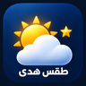

إضافة الموقع للشاشة الرئيسية
افتح الموقع في متصفح هاتفك لعرض طريقة التثبيت.

أجواء هدى الآن
جارٍ تحديث الطقس…
بانتظار توقعات حديثة
احتمال المطر غير متاح
الساعات والأيام في مكان واحد · التوقعات قابلة للتغيّر
اسحب لمتابعة الساعات ←
جارٍ تحديث التوقعات…
جارٍ تحديث توقعات الأيام…
المصدر: Open-Meteo
تتحدث صور السحب تلقائيًا كل 15 دقيقة؛ وقت التقاطها يظهر داخل الخريطة.
المصدر: Windy.com
الهزات المسجلة خلال آخر 30 يومًا · المصدر: USGS
جارٍ جلب آخر الهزات…
حدود النطاق البحري: Marine Regions · حدود اليابسة: geoBoundaries.
افتح الموقع في متصفح هاتفك لعرض طريقة التثبيت.
فعّل التنبيهات لتسجيل اشتراكك.
افتح رابط الموقع في المتصفح لعرض خيارات الإضافة إلى الشاشة الرئيسية.